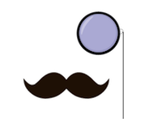

About Us
Through Visuell, we aim to make the internet more accessable and user-friendly for all of its users. The Chrome Extension offers 3 methods of interaction: entering an pre-known visual acuity proportion, an pre-known prescription, or by taking a Snellen Test provided by the extension itself. Through those measurements, the proportions of the webpages are adjusted to fit the user's unique needs, making it possible for them to browse without the use of glasses. Working across all tabs, Visuell provides a seamless way to enjoy the internet comfortably and safely.

Made by Team Monocle